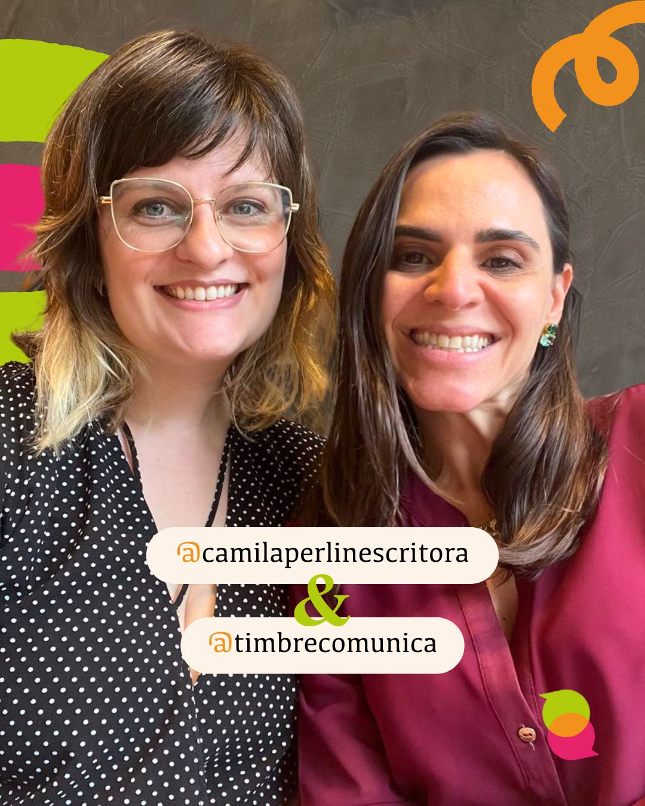
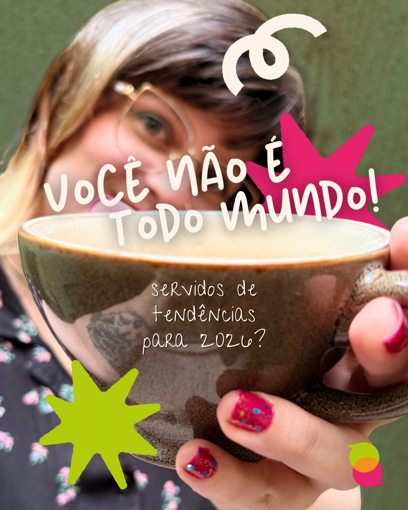
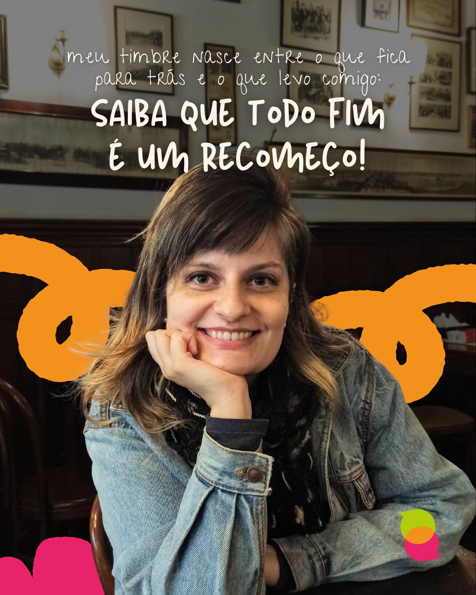

marca, conteúdo e presença
Filó
Estratégia
ideias conectadas,Estratégia
comunicação alinhada.
site + redes sociais
Filó Estratégia
Conteúdo, site e redes sociais reunidos em uma comunicação alinhada à marca.
conhecer o sitecomunicação & marketing digital
O teu negócio tem um jeito só dele.
A comunicação também pode ter.
01 / o que a gente pode criar
Vamos transformar o que tu quer dizer em uma comunicação que faça sentido para o teu negócio e para quem chega até ele.
Planejamento, posicionamento e tom de voz para orientar a comunicação. Um caminho construído a partir do momento e dos objetivos do teu negócio.
Ideias, textos e peças que dão continuidade à presença da marca. Conteúdo pensado para conversar com as pessoas certas.
Redação, revisão e conteúdo para sites, campanhas e projetos. Clareza para apresentar o que tu faz e por que isso importa.
Organização de canais, sites e comunicação de lançamentos. As peças se conectam para apresentar a tua marca com coerência.
02 / comunicação na prática
marca, conteúdo e presença
Conteúdo, site e redes sociais reunidos em uma comunicação alinhada à marca.
conhecer o site
Estratégia e conteúdo para acompanhar a trajetória de uma escritora e seus livros.
acompanhar a parceria
Reflexões e bastidores sobre marcas, comunicação e a vida de quem empreende.
explorar os conteúdoso ponto de partida é sempre teu
A escuta vem primeiro. Depois, a gente organiza as ideias e encontra a forma de colocar tudo no mundo.

prazer, Gabi!03 / quem está do outro lado
Sou a Gabriela Belnhak Moraes, jornalista, estrategista de conteúdo e fundadora da Timbre.
Minha trajetória passa pelo jornalismo, pela música e pelo marketing digital. É desse encontro que nasce meu olhar para a comunicação.
Gosto de ouvir, organizar ideias e construir junto. Porque conhecer quem faz é parte de encontrar o melhor jeito de contar.
conhece minha trajetória04 / a conversa vira caminho
Me conta a tua ideia. A partir dela, a gente define o que faz sentido construir.
Tu conta o que faz, o que precisa e onde quer chegar.
Alinhamos prioridades e uma proposta para o teu momento.
As ideias ganham forma, com troca e direção em cada etapa.
tua próxima ideia começa com um oi
Me conta o que tu tem em mente.
A gente descobre o próximo passo na conversa.